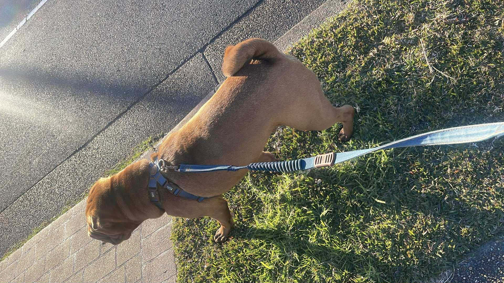

My Hobbies
In my free time, I enjoy a variety of hobbies that help me relax and unwind. One of my favorite things to do is playing online games with my partner.
 Another hobby I am passionate about is walking with my dog. The daily walks not only provide exercise for both of us but also offer a chance to explore the neighborhood and enjoy the outdoors. (My dog loves meeting other dogs and people during our walks!)
Additionally, I enjoy driving. Whether it's a short trip to the local shops or a longer journey to explore new places, driving gives me a sense of freedom and adventure. I particularly enjoy scenic drives where I can take in the beautiful landscapes. I also work with Uber Eats as a part-time delivery driver, which allows me to explore different areas of the city while earning some extra income. Money money money!
Lastly, I have a passion for cooking. I work in a Pizza shop as an all-rounder, where I get to experiment with different recipes and flavors. Cooking is not only a practical skill but also a creative outlet for me. I enjoy trying out new dishes and sharing them with friends and family.